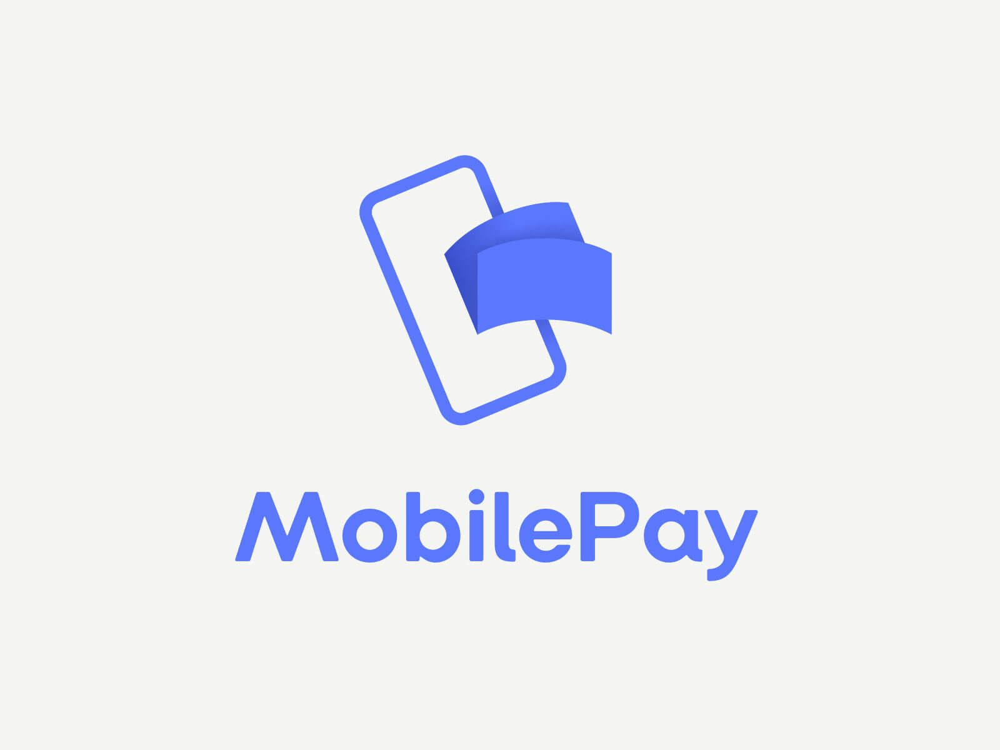

Jokainen lahjoitus mahdollistaa turvallisen yhteisön ja uuden alun sitä tarvitseville. Olit tukijana minkä kokoinen tahansa, viet työtä eteenpäin.

Lahjoita helposti MobilePay-sovelluksella. Valitse kohde — Suurin tarve tai Vankilatyö.
Avaa MobilePay-sovellus, valitse Lähetä rahaa ja syötä yllä oleva numero.
KAN ry:llä on Poliisihallituksen myöntämä rahankeräyslupa RA/2021/1068 (myönnetty 30.8.2021). Lahjoittajan tiedot pidetään luottamuksellisina, eikä niitä luovuteta kolmansille osapuolille.